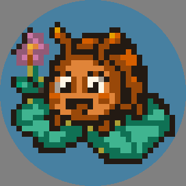

Critter Patch
A cozy pixel-art puzzle game for Apple Watch. Tap groups of matching garden critters, watch them tumble, and grow a little garden with the petals you earn.

A cozy pixel-art puzzle game for Apple Watch. Tap groups of matching garden critters, watch them tumble, and grow a little garden with the petals you earn.